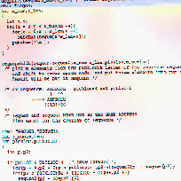
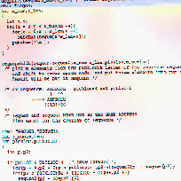
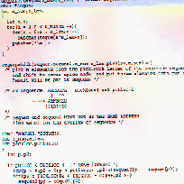

Keywords: Computational Biology, Bioinformatics, Molecular biology, Computer Science, Statistics, DNA, RNA, Sequence analysis, AUG, ATG, Start codon, Translation initation, Ribosome binding sites, Kozak, Shine-Dalgarno, Ribosomes, CAP structure, Free energy, Processing, Artificial intelligence, AI, Logic programming, PROGOL, Knowledge discovery, Data mining, Neural networks

2. Computer analyses of leaky scanning of AUG triplets in 5'UTR of vertebrate mRNAs
3.Computer Analyses of Translation Initiation Sites of M.genitalium.
4.Analysis of base-pairing potentials between 16S rRNA and 5' UTR for translation initiation in various procaryotes. Yuko Osada, Rintaro Saito, Masaru Tomita. Bioinformatics 1999 Jul-Aug;15(7-8):578-81
5.Characteristic sequence pattern in the 5- to 20-bp upstream region of primate Alu elements Yoshimi Toda, Rintaro Saito, Masaru Tomita. J Mol Evol. 2000 Mar;50(3):232-7
6.Discovering knowledge from Translation Initiation Sites using Progol
7.Prediction of Translation Initiation Sites with neural networks
9.Computer analyses of base forming potentials at both ends of rRNA operons in various genomes Gene(In press)
E-Mail:rsaito@sfc.keio.ac.jp